Explora nuestros servicios exclusivos en tienda
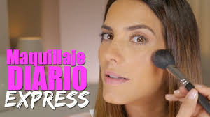
15 minGratuito con compra
Este servicio está diseñado para aquellas clientas que necesitan un retoque rápido pero impactante. En tan solo 15 minutos, nuestros maquilladores se enfocarán en resaltar tus ojos y labios, dándote un look fresco, definido y listo para el día o la noche. Utilizaremos productos que se adapten a tu tono de piel y preferencias personales, y te recomendaremos cómo mantener el look durante el día. No requiere cita previa y está disponible con una compra mínima de $10 el mismo día.
60 min60€
Para esas ocasiones que requieren un maquillaje impecable y duradero, este servicio incluye una sesión completa con un maquillador profesional. Tras preparar tu piel, aplicaremos una base de alta cobertura, contornos, iluminadores, sombras y labiales de larga duración. El resultado será un look personalizado, sofisticado y perfecto para bodas, fiestas, sesiones de fotos o eventos importantes. Requiere cita previa con mínimo 24 horas de antelación.
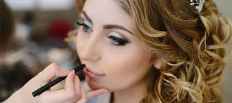
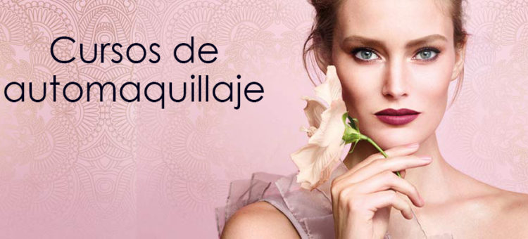
55 min45€
Una clase individual pensada para enseñarte a maquillarte según tus rasgos, nivel de experiencia y estilo de vida. Aprenderás desde la preparación de la piel hasta técnicas para aplicar base, sombras, rubor, delineador y labial. Todo con productos que se ajusten a tu tipo de piel y preferencias. Ideal para quienes están empezando o quieren mejorar su técnica. El coste del servicio se descuenta si realizas una compra del mismo valor. Solo con cita previa.
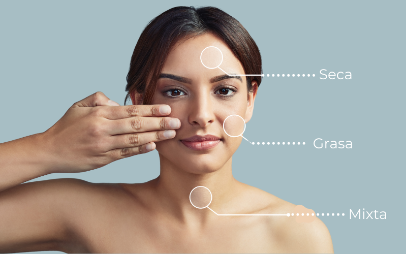
25 minGratuito
¿No sabes qué tipo de piel tienes o cómo cuidarla? Con este servicio, uno de nuestros expertos evaluará tu piel a través de una revisión personalizada y te explicará cuáles son los productos más adecuados para ti. Recibirás recomendaciones para una rutina completa de día y de noche, además de una pequeña demostración de uso de productos. Este diagnóstico es completamente gratuito y no requiere compra mínima. Cita previa recomendada para asegurar tu espacio.
30 minGratuito
Tu cabello también necesita atención especializada. Este servicio analiza el estado actual de tu cabello: si está seco, dañado, teñido, fino o encrespado. Luego de identificar sus necesidades, aplicaremos una muestra de tratamiento capilar adaptado a ti (mascarilla, sérum, aceite o leave-in) y te enseñaremos cómo usarlo correctamente en casa. Servicio gratuito, ideal para quienes buscan revitalizar su melena sin compromiso de compra. Con cita previa.
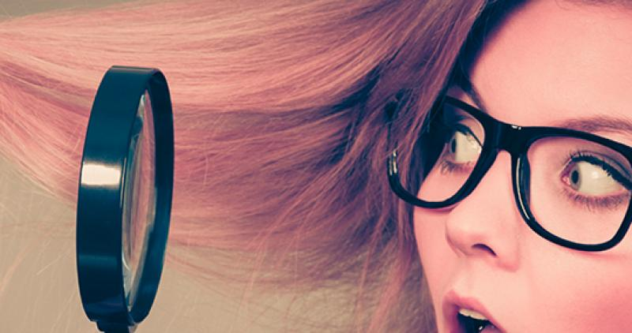
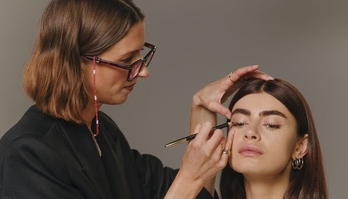
30 minGratuito con compra
¿Quieres mejorar tu técnica de maquillaje o descubrir qué productos y tonos se adaptan mejor a ti? En este diagnóstico, un experto evaluará tu tipo de piel, rasgos y preferencias para recomendarte una rutina de maquillaje diaria o para ocasiones especiales. Recibirás una asesoría personalizada con demostración de aplicación (base, corrector, rubor, ojos o labios), adaptada a tus necesidades y estilo. Servicio gratuito que requiere compra.
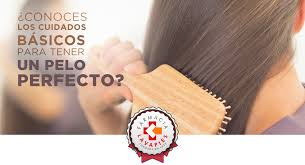
30 minGratuito
Un espacio educativo y práctico donde aprenderás a crear una rutina de cuidado para tu cabello. Analizaremos tu textura capilar y objetivos (reparación, hidratación, control del frizz, volumen, etc.) y te mostraremos cómo aplicar correctamente champús, mascarillas, acondicionadores y tratamientos sin enjuague. Además, recibirás consejos personalizados para el mantenimiento en casa. Servicio sin costo y muy recomendado para quienes buscan cambiar de look o mejorar la salud capilar.
30 min30€ (canjeables en productos)
Conoce los pasos clave para lograr una piel saludable, luminosa y protegida en casa. Esta clase personalizada incluye una introducción al cuidado diario de la piel: limpieza, exfoliación, tónico, sérum, contorno de ojos, hidratación y protección solar. Aprenderás cómo y cuándo aplicar cada producto y qué ingredientes funcionan mejor para ti. Todo lo que inviertas en este servicio se puede canjear en productos seleccionados. Ideal para principiantes o para actualizar tu rutina. Requiere cita previa.
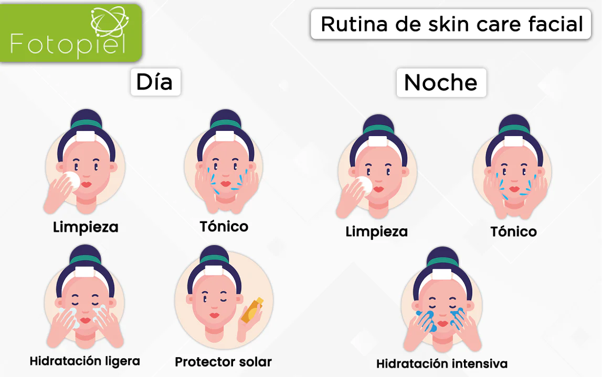
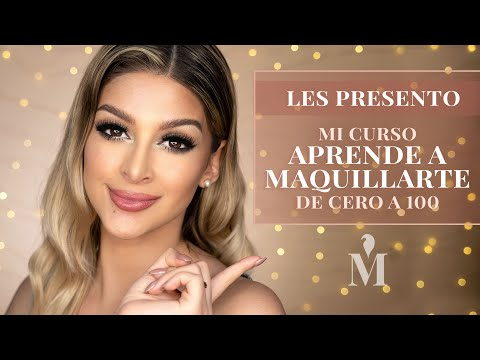
45 min30€ (canjeables en productos)
Descubre cómo lograr un look natural, fresco y favorecedor en pocos pasos. Esta clase personalizada está pensada para quienes quieren aprender a maquillarse desde cero o simplificar su rutina diaria. Aprenderás a elegir tu base ideal, aplicar corrector, rubor, sombras básicas, máscara y labial con técnicas fáciles de replicar. Todo con productos adaptados a tu tono de piel y estilo personal. El valor de la clase se canjea en productos seleccionados. Requiere cita previa.
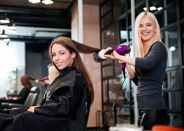
20 min15€
Servicio ideal para quienes necesitan un peinado rápido antes de un evento o compromiso. Puedes elegir entre ondas suaves, alisado exprés o recogidos simples. No incluye lavado, por lo que se recomienda venir con el cabello limpio y seco. Perfecto para complementar un maquillaje de evento o una asesoría de fragancias. Disponible según agenda del estilista.
25 min25€
Dale vida a tu cabello con un tratamiento hidratante profesional. Incluye la aplicación de una mascarilla o tratamiento intensivo en medios y puntas, seguido de un peinado ligero para dejarlo listo. Ideal para cabellos apagados, secos o con daños por coloración. Este servicio ayuda a restaurar el brillo y la suavidad sin dejar sensación pesada. Cita previa recomendada.
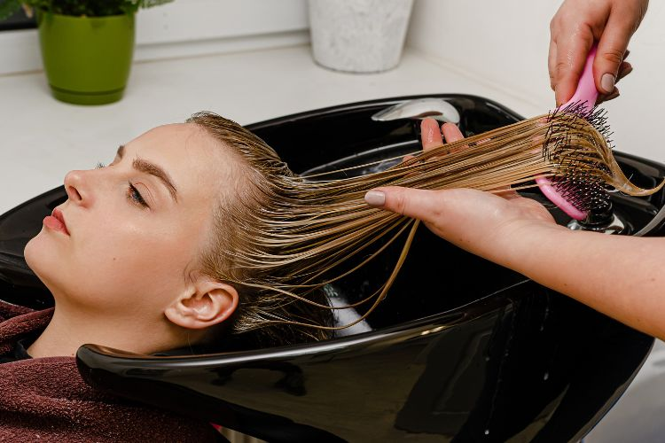
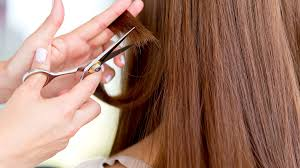
30 min20€
Una sesión enfocada en sanear tu melena sin comprometer su largo. Comenzamos con un diagnóstico rápido para evaluar el estado de tu cabello, seguido de un corte de puntas que elimina lo dañado y promueve el crecimiento saludable. Es ideal para mantener tu forma de corte y revitalizar tu look sin un cambio drástico. Incluye peinado básico. Requiere cita previa y está sujeto a disponibilidad del estilista.
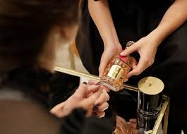
10 minGratuito
Descubre el mundo de las fragancias de la mano de un experto. A través de una sesión sensorial, exploraremos diferentes familias olfativas (floral, oriental, cítrica, amaderada, gourmand) y te ayudaremos a encontrar el aroma que mejor refleje tu personalidad y estilo. Probaremos distintas notas en tiras olfativas y en piel, y aprenderás sobre la duración, evolución y proyección de cada tipo de perfume. Servicio gratuito, sin obligación de compra. Con o sin cita.
20 min20€ (canjeables en fragancias)
Una experiencia exclusiva para quienes aman el arte del perfume. Aprende a aplicar fragancias de forma correcta, a combinarlas con productos complementarios como aceites o lociones corporales, y a construir un ritual diario que haga que tu aroma dure más tiempo. Al finalizar, recibirás una guía personalizada y podrás usar el importe del servicio como crédito para tu próxima compra de fragancias. Ideal para regalar o regalarte. Con cita previa.

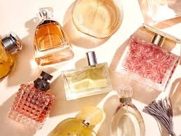
15 minGratuito
¿Aún no encuentras ese perfume que sientas verdaderamente tuyo? En esta experiencia te guiaremos paso a paso para identificar tu “firma olfativa”, ese aroma que se convierte en tu sello personal. A través de un recorrido por notas clave, intensidades y sensaciones, definiremos juntos qué estilo de fragancia te representa mejor y cómo elegir perfumes para diferentes momentos del día o del año. Incluye prueba en piel y recomendaciones exclusivas. Sin costo ni obligación de compra. Con o sin cita.